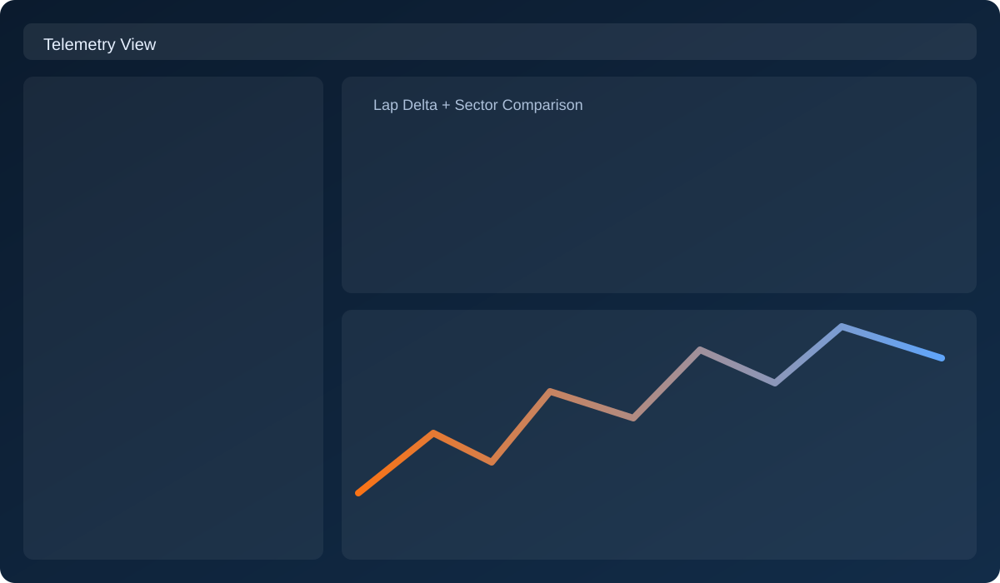
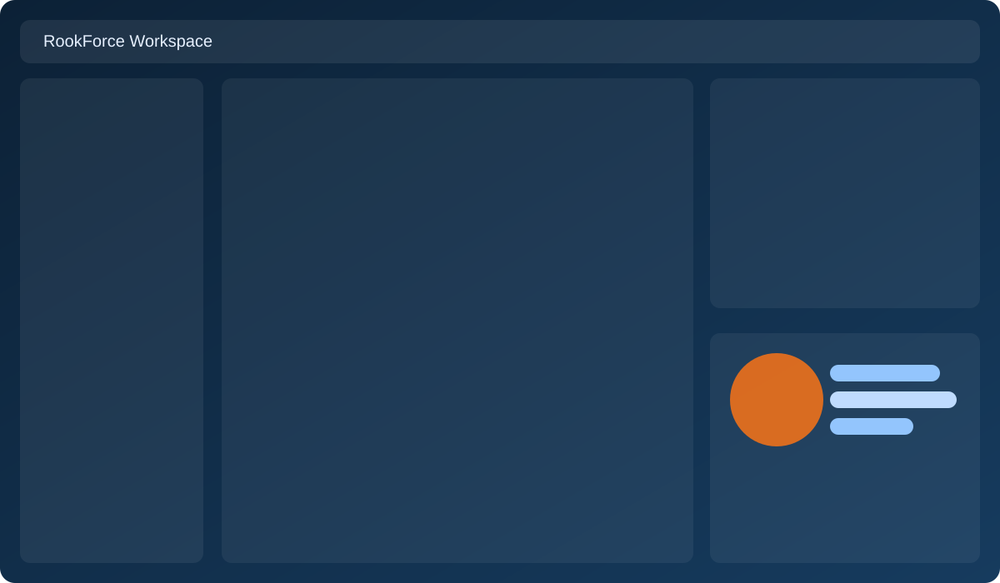

Session analysis
Inspect laps, sectors, and comparative deltas to identify repeatable pace instead of one-off hero laps.
Official Rookline Release
Rookline is a Windows desktop app for LMU telemetry review, lap analysis, setup support, and optional AI coaching. Understand what changed, why lap time moved, and what to adjust next.
Rookline keeps telemetry, setup context, and race workflow in one place so you can move from data to decisions quickly.
Inspect laps, sectors, and comparative deltas to identify repeatable pace instead of one-off hero laps.
Use evidence-backed setup context and guardrails tuned for the current car and track conditions.
Manage wheelbase and profile workflows in the integrated RookForce area without leaving the app.
Go from first laps to setup decisions with a repeatable process that keeps evidence tied to each change.
Review laps and sectors to isolate where time appears or disappears rather than guessing from feel alone.
Use telemetry context and setup history to connect behavior changes to specific, testable adjustments.
Run the next stint with clear targets, then confirm whether the adjustment improved consistency and pace.
Swap these placeholders with your own screenshots any time in site/assets.


Yes. Rookline is a Windows desktop application focused on telemetry review, analysis, and setup workflow support.
Yes. Rookline checks SHA-256 before installer launch and fails closed if the downloaded file does not match the expected hash.
Absolutely. Update text, screenshots, sections, and style directly in site/index.html and site/assets, then push to deploy.
Installer launch is fail-closed unless SHA-256 matches expected release hash.
6E5656B5D14010154632153B072A54474D91FC0B3050C629482A9ECC865867BC